Introduction
The very popular R package ‘ggrepel’ does a great job at avoiding overlaps among data labels and between them and observations plotted as points. A difficulty that stems from the use of an algorithm based on random displacements is that the final location of the data labels can become more disordered than desirable. In addition when including smooth regression lines the data labels may partly occlude the fitted line and/or the confidence band.
Package ‘ggpp’ defines new position functions that save the starting position like position_nudge_repel() does but come in multiple flavors. Their use together with repulsive geometries from ‘ggrepel’ makes it possible to give to the data labels an initial “push” in a non-random direction. This helps a lot, much more than what I expect initially, in obtaining a more orderly displacement by repulsion of the data labels away from a cloud of observations or a line.
Because of the naming convention used, the new position functions remain fully compatible with all geometries that have a formal parameter position. However, most examples below use geometries from packages ‘ggrepel’ or ‘ggpp’ to create a plot layer containing data labels as currently geoms from these packages can draw connecting segments or arrows between the original and displaced positions.
Preliminaries
As we will use text and labels on the plotting area we change the default theme to an uncluttered one.
Position functions and nudging
Nudging shifts deterministically the x and/or y coordinates of an observation. This takes place early enough for the limits of the corresponding scales be set based on the displaced positions. In ‘ggplot2’, position functions and consequently also geometries by default apply no nudging.
Function position_nudge() from package ‘ggplot2’ applies the nudge, to x and/or y data coordinates based directly on the values passed to its parameters x and y. Passing arguments to the nudge_x and/or nudge_y parameters of a geometry has the same effect, as these values are passed to position_nudge() within the geometry’s code. Geometries also have a position parameter to which we can pass an expression based on a position function which opens the door to more elaborate approaches to nudging, as well as allowing other changes in coordinates such as stacking.
We use geom_point_s() to exemplify what nudging does. The black dots are the original positions and the red ones the nudged positions, with the arrows of length 0.5 along x, showing the displacement and its direction.
ggplot(data.frame(x = 1:10, y = rnorm(10)), aes(x, y)) +
geom_point() +
geom_point_s(nudge_x = 0.5, colour = "red")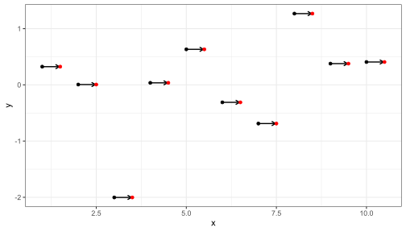
Function position_nudge_keep() keeps a copy of the original position making it possible for geometries like geom_point_s() to draw connecting segments or arrows.
Package ‘ggpp’ provides several new position functions to facilitate nudging. All of them keep the original positions to allow links to be drawn. Some of them, just simplify some use cases, e.g., position_nudge_to(), which accepts the desired nudged coordinates directly, instead of as a displacement away from the initial position. This allows to push data labels away from observations into a row or column.
Other new position functions compute the nudge for individual observations based on different criteria. For example by nudging away from a focal point, a line or a curve. The focal point or line can be either supplied directly or fitted to the observations. In position_nudge_center() and position_nudge_line() described below, this reference alters only the direction (angle) along which nudge is applied but not the extent of the shift. Advanced nudging works very well, but only for some patterns of observations and may require manual adjustment of positions, repulsion is more generally applicable but like jittering is aleatory. Combining nudging and repulsion we can make repulsion more predictable with little loss of its applicability.
These position functions can be used with any geometry but if segments joining the nudged positions to the original ones are desired, only geometries from packages ‘ggrepel’ or ‘ggpp’ can currently be used. Geometries geom_text_repel() or geom_label_repel() from ‘ggrepel’ should be used when repulsion is desired. Setting max.iter = 0 in these functions disables repulsion but allows the drawing of segments or arrows. Alternatively, several geometries from ‘ggpp’ implement the drawing of connecting segments, but none of them implement repulsion. Please see the documentation for the different geometries from packages ‘ggrepel’ and ‘ggpp’ for the details.
As mentioned above, drawing of segments or arrows is made possible by position functions storing in data both the nudged and original x and y coordinates. The joint use of ‘ggrepel’ and ‘ggpp’ was made possible by coordinated development of these packages and agreement on a naming convention for storing the original position. Keeping both nudged and original positions increases the size of the data, and consequently also the size of the ggplot objects. Because of this, the position functions from ‘ggpp’ allow the keeping of the original positions to be disabled when needed.
Connecting segments and arrows
Function position_nudge_keep() is like ggplot2::position_nudge() but keeps (stores) the original x and y coordinates. It is similar to function position_nudge_repel() but uses a different naming convention for the coordinates. Both work with geom_text_repel() or geom_label_repel() from package ‘ggrepel’ (>= 0.9.2), but only position_nudge_keep() can be used interchangeably with ggplot2::position_nudge() with other geometries such as geom_text().
set.seed(84532)
df <- data.frame(
x = rnorm(20),
y = rnorm(20, 2, 2),
l = paste("label:", letters[1:20])
)With position_nudge_keep() from ‘ggpp’ used together with geom_text_repel() or geom_label_repel() segments between a nudged and/or repelled label and the original position (here indicated by a point) are drawn. As shown here, passing max.iter = 0 disables repulsion.
ggplot(df, aes(x, y, label = l)) +
geom_point() +
geom_text_repel(position = position_nudge_keep(x = 0.3),
max.iter = 0)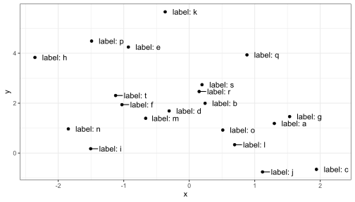
PCA loadings
A usually more problematic example is the labeling of loadings in PCA and similar biplots.
## Example data frame where each species' principal components have been computed.
df1 <- data.frame(
Species = paste("Species",1:5),
PC1 = c(-4, -3.5, 1, 2, 3),
PC2 = c(-1, -1, 0, -0.5, 0.7))
ggplot(df1, aes(x=PC1, y = PC2, label = Species, colour = Species)) +
geom_hline(aes(yintercept = 0), linewidth = .2) +
geom_vline(aes(xintercept = 0), linewidth = .2) +
geom_segment(aes(x = 0, y = 0, xend = PC1, yend = PC2),
arrow = arrow(length = unit(0.1, "inches"))) +
geom_label_repel(position = position_nudge_center(x = 0.2, y = 0.01,
center_x = 0, center_y = 0),
label.size = NA,
label.padding = 0.1,
fill = rgb(red = 1, green = 1, blue = 1, alpha = 0.75)) +
xlim(-5, 5) +
ylim(-2, 2) +
# Stadard settings for displaying biplots
coord_fixed() +
theme(legend.position = "none")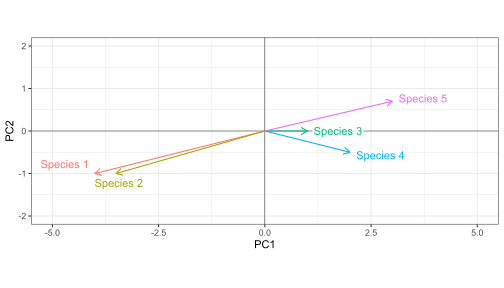
Aligned data labels
Function position_nudge_to() nudges to a given position instead of using the same shift for each observation. It can be used to align labels for points that are not themselves aligned.
ggplot(df, aes(x, y, label = ifelse(x < 0.5, "", l) )) +
geom_point() +
geom_text_repel(position =
position_nudge_to(x = 2.3),
min.segment.length = 0,
segment.color = "red",
arrow = arrow(length = unit(0.015, "npc")),
direction = "y") +
expand_limits(x = 3)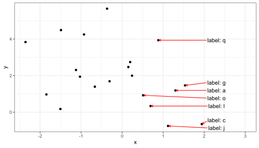
By providing two values for nudging with opposite sign, we can add labels alternating between sides. We use here geom_text_s() but other geometries could have been used as well. How the data labels been closer together repulsion would have been needed in addition to nudging.
size_from_area <- function(x) {sqrt(max(0, x) / pi)}
df2 <- data.frame(b = exp(seq(2, 4, length.out = 10)))
ggplot(df2, aes(1, b, size = b)) +
geom_text_s(aes(label = round(b,2)),
position = position_nudge_to(x = c(1.1, 0.9)),
box.padding = 0.5) +
geom_point() +
scale_size_area() +
xlim(0, 2) +
theme(legend.position = "none")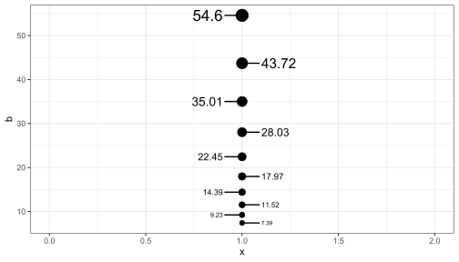
It is also useful when labeling curves than end at different positions along the x axis. In this example we avoid overlaps with repulsion along the y axis. The data set used in this example is dynamic, so we use nudging to a position that is dynamicaly computed from the data.
keep <- c("Israel", "United States", "European Union", "China", "South Africa", "Qatar",
"Argentina", "Chile", "Brazil", "Ukraine", "Indonesia", "Bangladesh")
data <- read.csv("https://raw.githubusercontent.com/owid/covid-19-data/master/public/data/vaccinations/vaccinations.csv")
data$date <- ymd(data$date)
data %>%
filter(location %in% keep) %>%
select(location, date, total_vaccinations_per_hundred) %>%
arrange(location, date) %>%
filter(!is.na(total_vaccinations_per_hundred)) %>%
mutate(location = factor(location),
location = reorder(location, total_vaccinations_per_hundred)) %>%
group_by(location) %>% # max(date) depends on the location!
mutate(label = if_else(date == max(date),
as.character(location),
"")) -> owid
ggplot(owid,
aes(x = date,
y = total_vaccinations_per_hundred,
color = location)) +
geom_line() +
geom_text_repel(aes(label = label),
size = 3,
position = position_nudge_to(x = as.numeric(max(owid$date) + days(50))),
segment.color = 'grey',
point.size = 0,
box.padding = 0.1,
point.padding = 0.1,
hjust = "left",
direction = "y") +
scale_x_date(expand = expansion(mult = c(0.05, 0.2))) +
labs(title = "Cumulative COVID-19 vaccination doses administered per 100 people",
y = "",
x = "Date (year-month)") +
theme_bw() +
theme(legend.position = "none")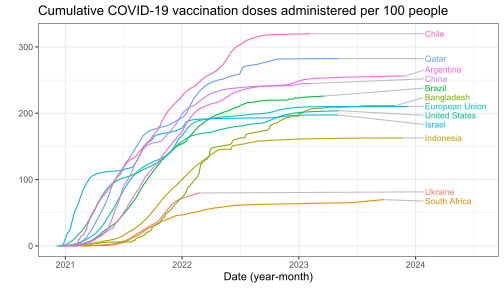
In the call to position_nudge_to() we passed a vector of length one as argument for x, but both x and y also accept longer vectors. In other words, this position function makes it possible manual positioning of text and labels.
In the next example we decrease the forces used for repulsion and the padding so that the labels remain close together. In this way, we can label the observations on the rug of a combined point and rug plot.
ggplot(df, aes(x, y, label = round(x, 2))) +
geom_point(size = 3) +
geom_text_repel(position = position_nudge_to(y = -2.7),
size = 3,
angle = 90,
hjust = 0,
box.padding = 0.05,
min.segment.length = Inf,
direction = "x",
force = 0.1,
force_pull = 0.1) +
geom_rug(sides = "b", length = unit(0.02, "npc"))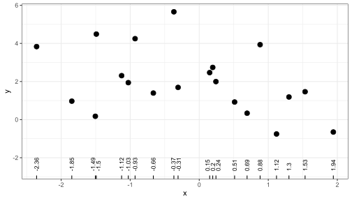
Clouds of observations
In many cases data are distributed as a cloud with decreasing density towards edges. In some other cases, even with evely distributed observations, a certain partly systematic pattern of displacement of data labels is visually more attractive than a fully random one. In both cases, combining nudging and repulsion is usually an effective approach.
In this example we use repulsion with nudging away from zero. In all cases nudging shifts the coordinates giving a new x and/or y position that expands the limits of the corresponding scales to include the nudged coordinate values, but not necessarily the whole of justified text or labels.
ggplot(df, aes(x, y, label = l)) +
geom_vline(xintercept = 0, linetype = "dashed") +
geom_point() +
geom_text_repel(position =
position_nudge_center(x = 0.3, center_x = 0),
min.segment.length = 0)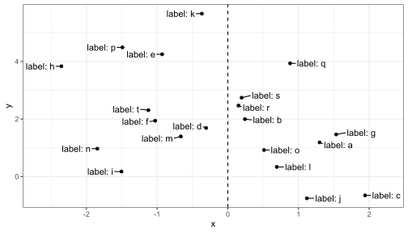
We set a different split point as the value computed by a function function, by name.
ggplot(df, aes(x, y, label = l)) +
geom_vline(aes(xintercept = median(x)), linetype = "dashed") +
geom_point() +
geom_text_repel(position =
position_nudge_center(x = 0.3, center_x = median),
min.segment.length = 0)
We set a different split point as the value computed by an anonymous function. Here we split on the first quartile along x and y = 2.
ggplot(df, aes(x, y, label = l)) +
geom_point() +
geom_text_repel(position =
position_nudge_center(x = 0.3,
center_x = function(x) {
quantile(x,
probs = 1/4,
names = FALSE)
},
direction = "split"),
min.segment.length = 0)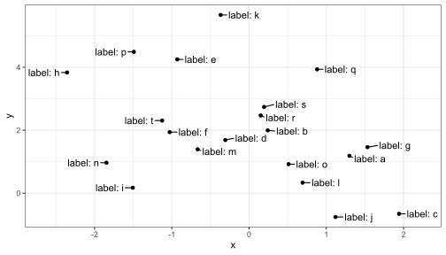
By requesting nudging along x and y and setting direction = "split" nudging is applied according to the quadrants centred on the centroid of the data.
ggplot(df, aes(x, y, label = l)) +
geom_point() +
geom_text_repel(position =
position_nudge_center(x = 0.1,
y = 0.15,
direction = "split"))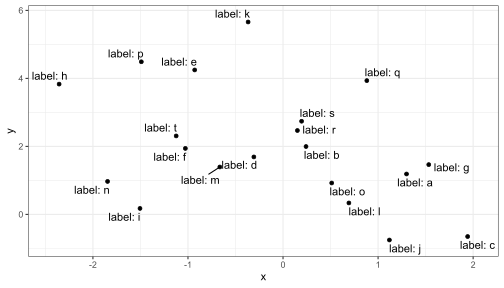
With direction = "radial", the distance nudged away from the center is the same for all labels.
ggplot(df, aes(x, y, label = l)) +
geom_point() +
geom_text_repel(position =
position_nudge_center(x = 0.25,
y = 0.4,
direction = "radial"),
min.segment.length = 0)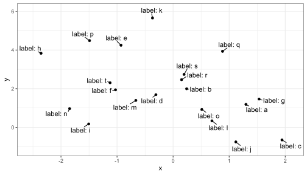
We can also set the justification of the text labels although repulsion usually works best with labels justified at the centre, which is the default in geom_text_repel().
ggplot(df, aes(x, y, label = l)) +
geom_point() +
geom_text_repel(position =
position_nudge_center(x = 0.25,
y = 0.25,
center_x = 0,
center_y = 2,
direction = "radial"),
min.segment.length = 0,
hjust = "outward", vjust = "outward") +
expand_limits(x = c(-2.7, +2.3))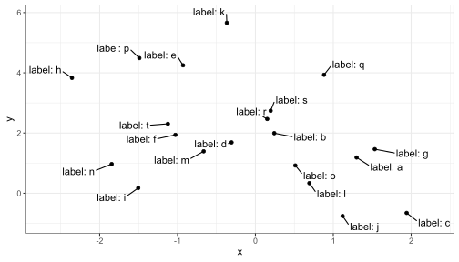
Nudging along one axis, here x, and setting the repulsion direction along the other axis, here y, tends to give a pleasant arrangement of labels.
ggplot(df, aes(x, y, label = l)) +
geom_point() +
geom_text_repel(position =
position_nudge_center(x = 0.2,
center_x = 0,
direction = "split"),
aes(hjust = "outward"),
direction = "y",
min.segment.length = 0) +
expand_limits(x = c(-3, 3))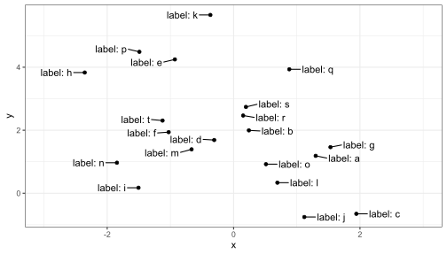
When some regions have a high density of observations we may wish to only label those in the lower density regions. To automate this, we can use statistics stat_dens2d_labels() or stat_dens1d_labels() that replace the labels with "" but retain all rows in data so that repulsion away from all points is achieved. In contrast, stat_dens2d_filter() or stat_dens1d_filter() subset data using identical criteria.
ggplot(df, aes(x, y, label = l)) +
geom_point() +
stat_dens2d_labels(geom = "text_repel",
keep.fraction = 1/2,
position =
position_nudge_center(x = 0.2,
center_x = 0,
direction = "split"),
aes(hjust = ifelse(x < 0, 1, 0)),
direction = "y",
min.segment.length = 0) +
stat_dens2d_filter(geom = "point",
keep.fraction = 1/2,
shape = "circle open", size = 3) +
expand_limits(x = c(-3, 3))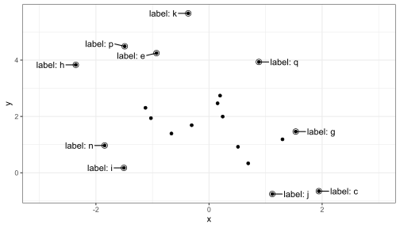
We create a set of example data with a denser distribution.
ggplot(data = d, aes(x, y, label = lab, colour = group)) +
geom_point() +
stat_dens2d_labels(geom = "text_repel",
keep.fraction = 0.45,
min.segment.length = 0)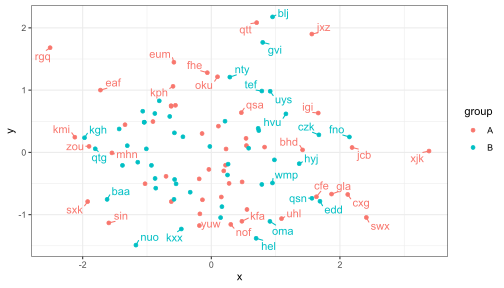
With geom_label_repel one usually needs to use a smaller value for keep.fracton, or a smaller size, as labels use more space on the plot than the test alone.
Additional arguments can be used to change the angle and position of the text, but may give unexpected output when labels are long as the repulsion algorithm “sees” always a rectangular bounding box that is not rotated. With short labels or angles that are multiples of 90 degrees, there is no such problem. Please, see the documentation for ggrepel::geom_text_repel and ggrepel::geom_label_repel for the various ways in which both repulsion and formatting of the labels can be adjusted.
Using NA as argument to label.fill makes the observations with labels set to NA incomplete, and such rows in data are skipped when rendering the plot, before the repulsion algorithm is active. This can lead to overlap between text and points corresponding to unlabelled observations. Whether points are occluded depends on the order of layers and transparency, the occlusion can remain easily unnoticed with geom_label and geom_label_repel. We keep geom_point as the topmost layer to ensure that all observations are visible.
ggplot(data = d, aes(x, y, label = lab, colour = group)) +
stat_dens2d_labels(geom = "label_repel",
keep.fraction = 0.2,
label.fill = NA) +
geom_point()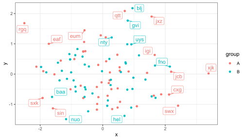
The 1D versions work similarly but assess the density along only one of x or y. In other respects than orientation and the parameters passed internally to stats::density() the examples given earlier for stat_dens2d_labels() also apply stat_dens1d_labels().
An example for a plot based on an enhancement suggested in an issue raised at GitHub by Michael Schubert, made possible by parameter keep.these added for this and similar use cases.
ggplot(dset, aes(x=x, y=y, label = label)) +
geom_point(colour = "grey85") +
stat_dens2d_filter(geom = "text_repel",
position = position_nudge_centre(x = 0.1,
y = 0.1,
direction = "radial"),
keep.number = 50,
keep.these = c("aA", "bB", "cC"),
min.segment.length = 0) +
theme_bw()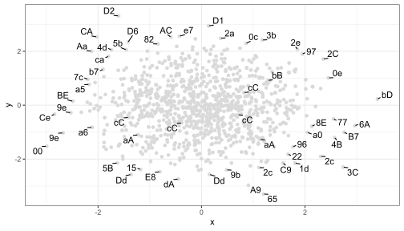
Lines, curves and observations along them
Function position_nudge_line() nudges away from a line, which can be a user supplied straight line as well as a smooth spline or a polynomial fitted to the observations themselves. The nudging is away and perpendicular to the local slope of the straight or curved line. It relies on the same assumptions as linear regression, assuming that x values are not subject to error. This in most cases prevents labels from overlapping a curve fitted to the data, even if not exactly based on the same model fit. When observations are sparse, this may be enough to obtain a nice arrangement of data labels, otherwise, it can be used in combination with repulsive geometries.
set.seed(16532)
df <- data.frame(
x = -10:10,
y = (-10:10)^2,
yy = (-10:10)^2 + rnorm(21, 0, 4),
yyy = (-10:10) + rnorm(21, 0, 4),
l = letters[1:21]
)We use a repulsive geometry when the label texts are long or the labels are crowded near the line. Combining repulsion and computed nudging is effective.
ggplot(df, aes(x, yy)) +
geom_point() +
stat_smooth(method = "loess", formula = y ~ x) +
geom_label_repel(aes(y = yy, label = paste("point", l)),
size = 3,
position = position_nudge_line(x = 0.9,
y = 8,
direction = "split"),
box.padding = 0.3,
min.segment.length = 0) +
expand_limits(x = c(-12, 12))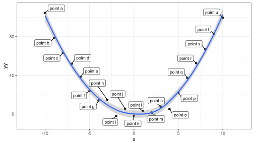
When fitting a polynomial, "lm" should be the argument passed to method and a model formula preferably based on poly(), setting raw = TRUE, as argument to formula.
Currently no other methods are implemented in position_nudge_line().
In the case of data labels that are small, a single character in the next example, we also benefit from nudging if they are near a fitted line. Nudging plus repulsion, shown next, will be compared to alternatives. In this case we assume no linking segments are desired as there is enough space for the data labels to remain near the observations.
ggplot(df, aes(x, yy)) +
geom_point() +
stat_smooth(method = "lm",
formula = y ~ poly(x, 2, raw = TRUE)) +
geom_text_repel(aes(y = yy, label = l),
position = position_nudge_line(method = "lm",
formula = y ~ poly(x, 2, raw = TRUE),
x = 0.5,
y = 5,
direction = "split"),
box.padding = 0.25,
min.segment.length = Inf)Using nudging alone there is little difference, but there is always the posibility of overlaps, so using nudging plus repulsion as above is safer.
ggplot(df, aes(x, yy)) +
geom_point() +
stat_smooth(method = "lm",
formula = y ~ poly(x, 2, raw = TRUE)) +
geom_text(aes(y = yy, label = l),
position = position_nudge_line(method = "lm",
formula = y ~ poly(x, 2, raw = TRUE),
x = 0.5,
y = 5,
direction = "split"))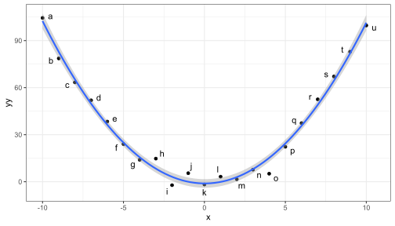
Combined dodge and nudge
In many cases combining nudging along one plot axis and repulsion along the other axis makes it possible to constrain the randomness of the labelling in the resulting plot. Applying this approach to labelling dodged points is not possible using the position functions defined in package ‘ggplot2’. Package ‘ggpp’ defines a combined position function that “keeps” the dodged position making it possible for geom_text_repel() to draw segments connecting the text to the dodged points.
mtcars <- mtcars
mtcars$cyl <- factor(mtcars$cyl)
mtcars$am <- factor(mtcars$am)
ggplot(mtcars, aes(x = am, y = mpg, label = format(mpg, 3))) +
geom_text_repel(
mapping = aes(group = cyl),
position = position_dodgenudge(width = 0.9,
y = 0, x = c(-0.1, 0.1)),
box.padding = 0.15,
size = 3,
alpha = 0.9,
min.segment.length = 0,
direction = "y"
) +
geom_point(
mapping = aes(color = cyl),
position = position_dodge(width = 0.9),
size = 3,
alpha = 0.5
)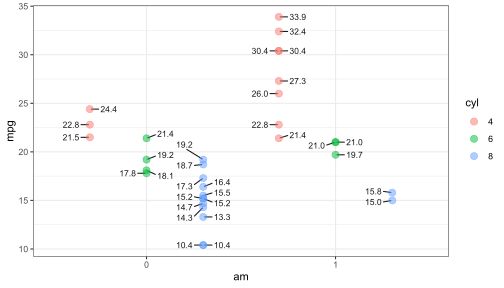
Acknowledgements
I warmly thank Kamil Slowikowski for agreeing to make changes in ‘ggrepel’ that make the use of ‘ggrepel’ together with ‘ggpp’ possible and smooth. This document shows some use examples, but surely new ones will be found by users of R and ‘ggplot2’.
References
citation('ggplot2')To cite ggplot2 in publications, please use
H. Wickham. ggplot2: Elegant Graphics for Data Analysis.
Springer-Verlag New York, 2016.
A BibTeX entry for LaTeX users is
@Book{,
author = {Hadley Wickham},
title = {ggplot2: Elegant Graphics for Data Analysis},
publisher = {Springer-Verlag New York},
year = {2016},
isbn = {978-3-319-24277-4},
url = {https://ggplot2.tidyverse.org},
}citation('ggpp')To cite package 'ggpp' in publications use:
Aphalo P (2023). _ggpp: Grammar Extensions to 'ggplot2'_. R package
version 0.5.5, https://github.com/aphalo/ggpp,
<https://docs.r4photobiology.info/ggpp/>.
A BibTeX entry for LaTeX users is
@Manual{,
title = {ggpp: Grammar Extensions to 'ggplot2'},
author = {Pedro J. Aphalo},
year = {2023},
note = {R package version 0.5.5,
https://github.com/aphalo/ggpp},
url = {https://docs.r4photobiology.info/ggpp/},
}citation('ggrepel')To cite package 'ggrepel' in publications use:
Slowikowski K (2023). _ggrepel: Automatically Position
Non-Overlapping Text Labels with 'ggplot2'_. R package version 0.9.4,
<https://CRAN.R-project.org/package=ggrepel>.
A BibTeX entry for LaTeX users is
@Manual{,
title = {ggrepel: Automatically Position Non-Overlapping Text Labels with
'ggplot2'},
author = {Kamil Slowikowski},
year = {2023},
note = {R package version 0.9.4},
url = {https://CRAN.R-project.org/package=ggrepel},
}citation('lubridate')To cite lubridate in publications use:
Garrett Grolemund, Hadley Wickham (2011). Dates and Times Made Easy
with lubridate. Journal of Statistical Software, 40(3), 1-25. URL
https://www.jstatsoft.org/v40/i03/.
A BibTeX entry for LaTeX users is
@Article{,
title = {Dates and Times Made Easy with {lubridate}},
author = {Garrett Grolemund and Hadley Wickham},
journal = {Journal of Statistical Software},
year = {2011},
volume = {40},
number = {3},
pages = {1--25},
url = {https://www.jstatsoft.org/v40/i03/},
}